De Nimes a Mónaco: pueblos medievales, playas y el glamour de la Riviera francesa
La Costa Azul (Côte d'Azur) es uno de los litorales más famosos del mundo. Situada en el sureste de Francia, entre la Provenza y la frontera con Italia, combina aguas de color turquesa, pueblos medievales colgados de las montañas, ciudades llenas de glamour y una luz que enamoró a pintores como Matisse, Chagall o Picasso.
Esta ruta recorre seis paradas imprescindibles de oeste a este: Nimes (la "Roma francesa", con su anfiteatro romano), Saint-Tropez (el antiguo pueblo de pescadores convertido en icono del lujo), Cannes (la ciudad del festival de cine), Niza (la capital de la Riviera y la mejor base para la ruta), Èze (un pueblo medieval suspendido sobre el mar) y Mónaco (el segundo país más pequeño del mundo). La mejor forma de recorrerla es en coche, aunque entre Cannes, Niza y Mónaco el tren es muy cómodo.
---Mi recomendación es dormir una noche en Nimes, otra en la zona de Saint-Tropez y el resto en Niza. Desde Niza puedes hacer excursiones de un día a Cannes, Èze y Mónaco en tren o autobús, sin tener que cambiar de hotel.
🚗 Aparcamiento: Si vas en coche, busca un hotel con parking incluido en Niza. Aparcar en la calle es complicado y los parkings públicos cuestan 20-30€ al día.
📅 Fechas a evitar: El Festival de Cannes y el Gran Premio de Mónaco (ambos en mayo) multiplican los precios de toda la costa. Comprueba las fechas antes de reservar.
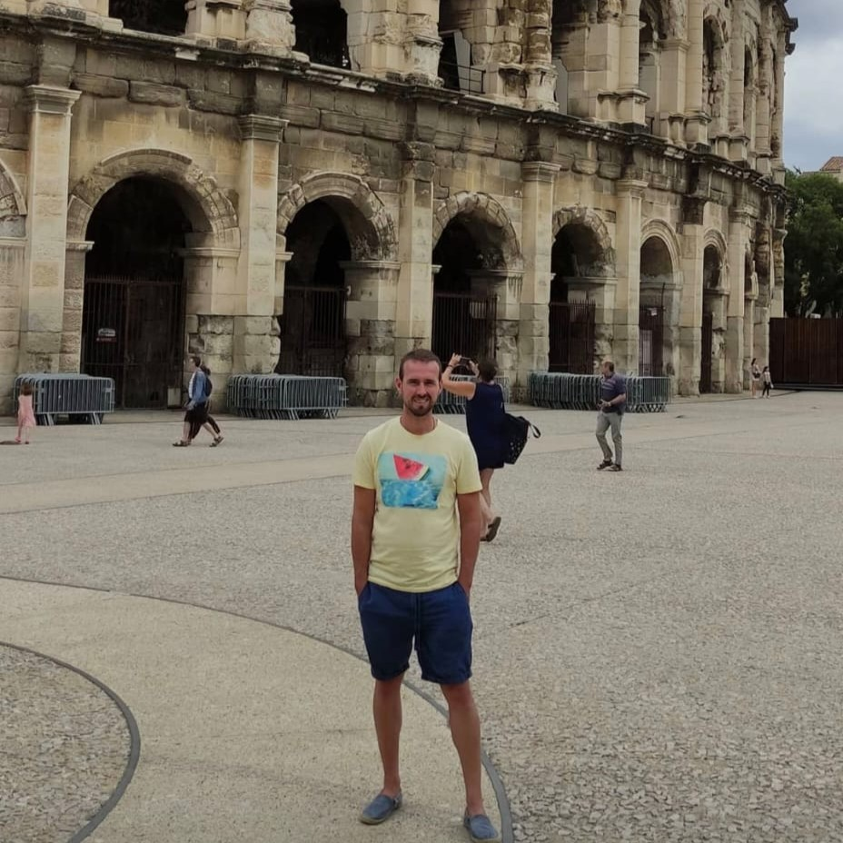
Las Arenas de Nimes son uno de los anfiteatros romanos mejor conservados del mundo. Construidas a finales del siglo I, tenían capacidad para unos 24.000 espectadores que acudían a ver luchas de gladiadores y espectáculos con animales.
La visita incluye una audioguía muy completa y permite recorrer las gradas, los pasillos y la arena. Hoy en día se siguen usando para conciertos, corridas de toros y recreaciones históricas romanas.
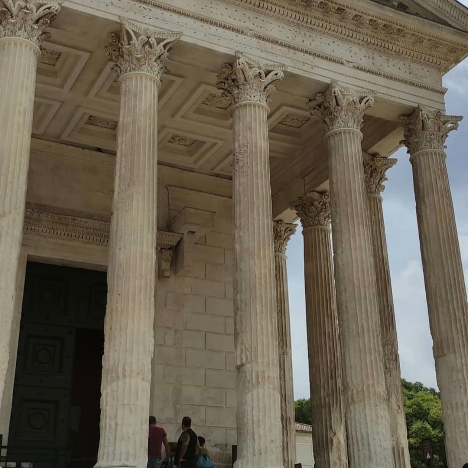
La Maison Carrée es un templo romano construido a principios del siglo I y es uno de los templos romanos mejor conservados del mundo. En 2023 fue declarado Patrimonio de la Humanidad por la UNESCO.
Justo enfrente está el Carré d'Art, un museo de arte contemporáneo de cristal y acero diseñado por Norman Foster. El contraste entre los dos edificios es una de las imágenes más bonitas de la ciudad.
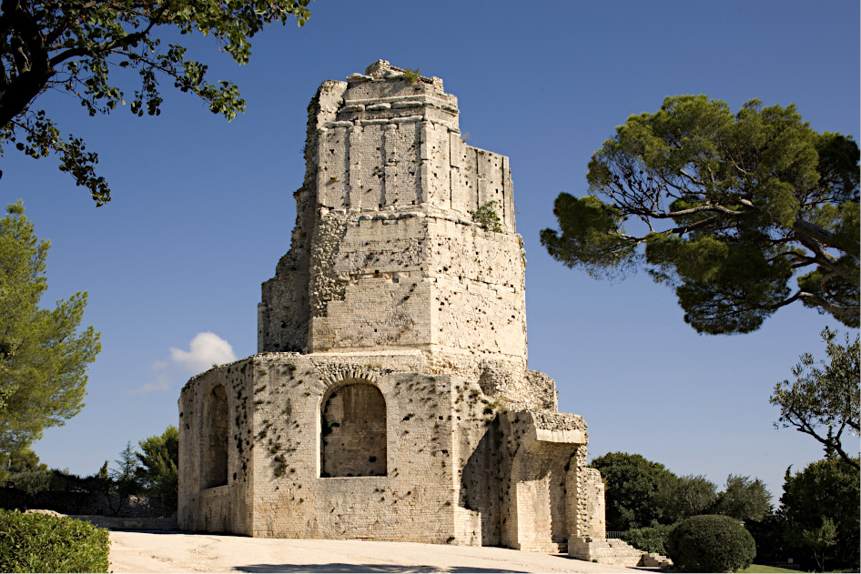
Los Jardines de la Fuente (Jardins de la Fontaine) son unos jardines del siglo XVIII construidos alrededor del manantial donde nació la ciudad. Tienen estanques, balaustradas de piedra y las ruinas del Templo de Diana.
Subiendo por el parque se llega a la Torre Magna, una torre de la antigua muralla romana desde la que hay unas vistas panorámicas de toda Nimes.
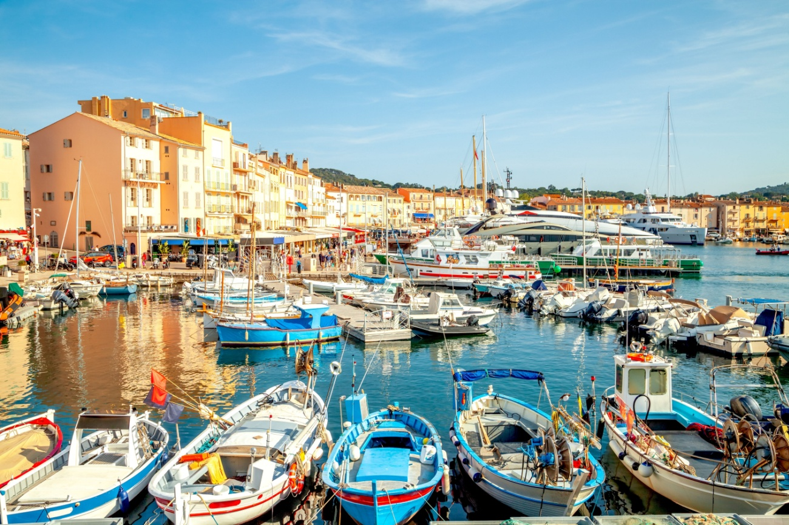
El Vieux Port es el corazón de Saint-Tropez: casas de colores, terrazas, pintores exponiendo sus cuadros y yates de lujo amarrados a pocos metros. Este antiguo pueblo de pescadores se hizo famoso en los años 50 gracias al cine y a Brigitte Bardot.
Muy cerca está La Ponche, el antiguo barrio de pescadores, con callejuelas estrechas y una pequeña playa. También puedes visitar el Museo de la Gendarmería y del Cine, en el edificio donde se rodaron las películas de "El gendarme de Saint-Tropez".
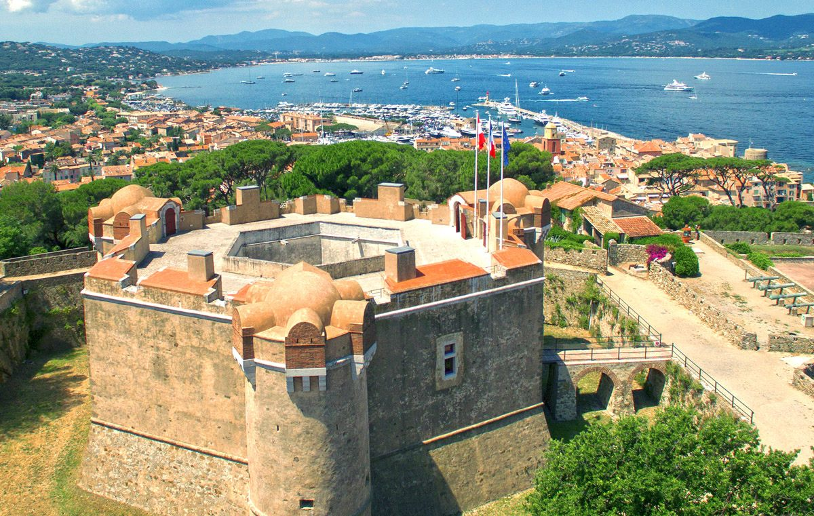
La Ciudadela es una fortaleza del siglo XVII situada en lo alto de la colina que domina el pueblo. En su interior está el Museo de Historia Marítima, que cuenta la relación de Saint-Tropez con el mar.
Lo mejor son las vistas: desde las murallas se ven los tejados del pueblo, el golfo de Saint-Tropez y, en días claros, los macizos montañosos del interior. Los jardines que la rodean son perfectos para un paseo tranquilo lejos del bullicio del puerto.
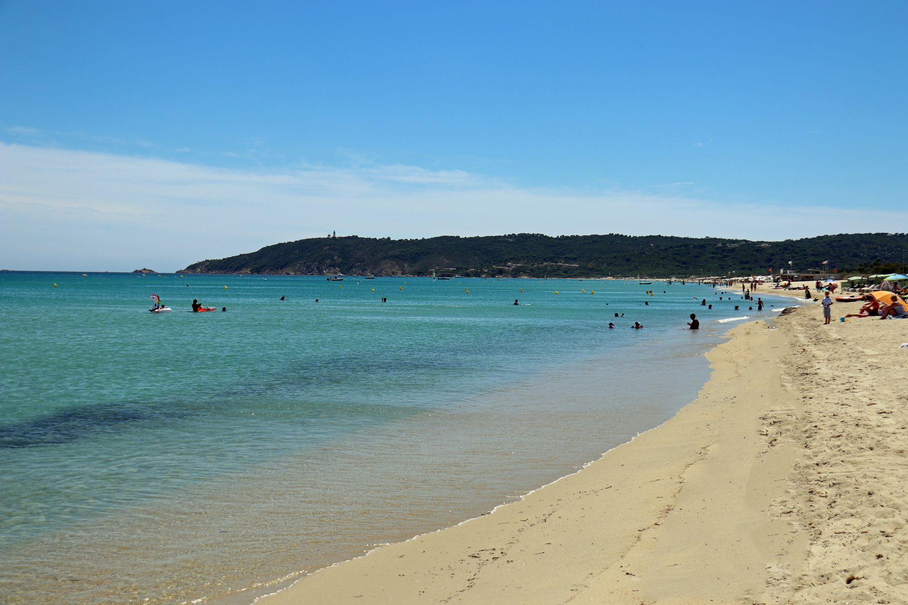
La playa de Pampelonne, en el municipio de Ramatuelle, es la playa más famosa de Saint-Tropez. Tiene casi 5 km de arena fina y aguas transparentes, y en ella se encuentran algunos de los clubes de playa más exclusivos del Mediterráneo.
Aunque muchos tramos están ocupados por clubes privados con hamacas, también hay zonas públicas y gratuitas donde poner tu toalla.
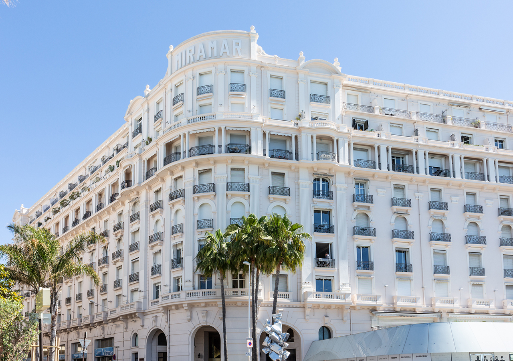
La Croisette es el paseo marítimo más elegante de Cannes, con palmeras, playas de arena y hoteles de lujo como el Carlton. En un extremo está el Palacio de Festivales, donde cada mes de mayo se celebra el Festival de Cine de Cannes.
Puedes hacerte la foto en la famosa escalinata de la alfombra roja y buscar las huellas de las manos de actores y directores en el Paseo de las Estrellas, junto al Palacio.
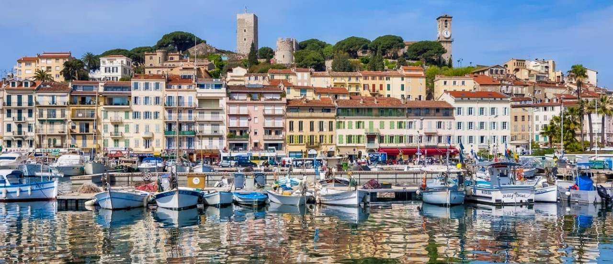
Le Suquet es el barrio más antiguo de Cannes, situado en una colina junto al puerto. Sus calles empedradas y empinadas están llenas de restaurantes con encanto, sobre todo la Rue Saint-Antoine.
En lo alto se encuentran la iglesia de Notre-Dame de l'Espérance y el Museo de la Castre, instalado en un antiguo castillo. Desde su torre y su mirador hay unas de las mejores vistas de la bahía y de La Croisette.
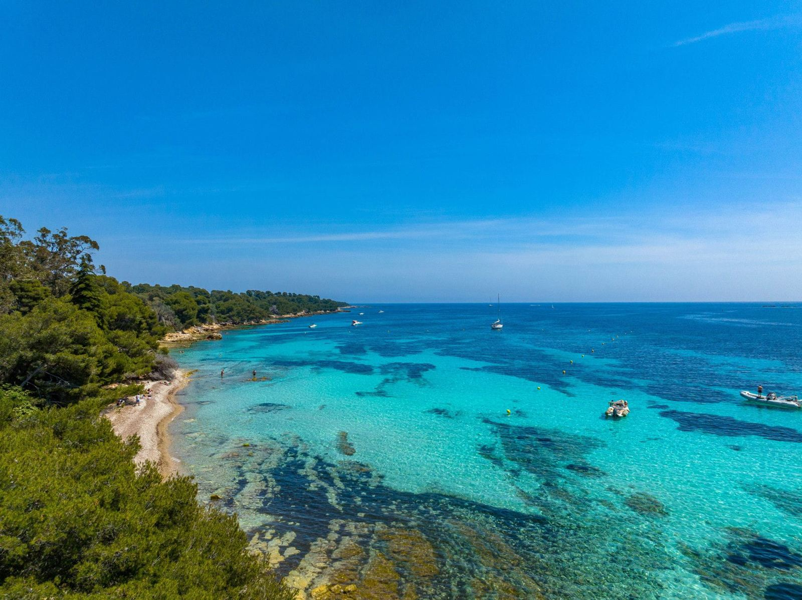
Frente a Cannes están las Islas de Lérins, un pequeño paraíso de pinos, calas y aguas cristalinas. En la isla de Santa Margarita se encuentra el Fuerte Real, donde estuvo encerrado el misterioso "Hombre de la máscara de hierro". Todavía se puede ver su celda.
La isla de San Honorato es más pequeña y tranquila. En ella viven monjes que cultivan viñedos y elaboran su propio vino y licores en una abadía.
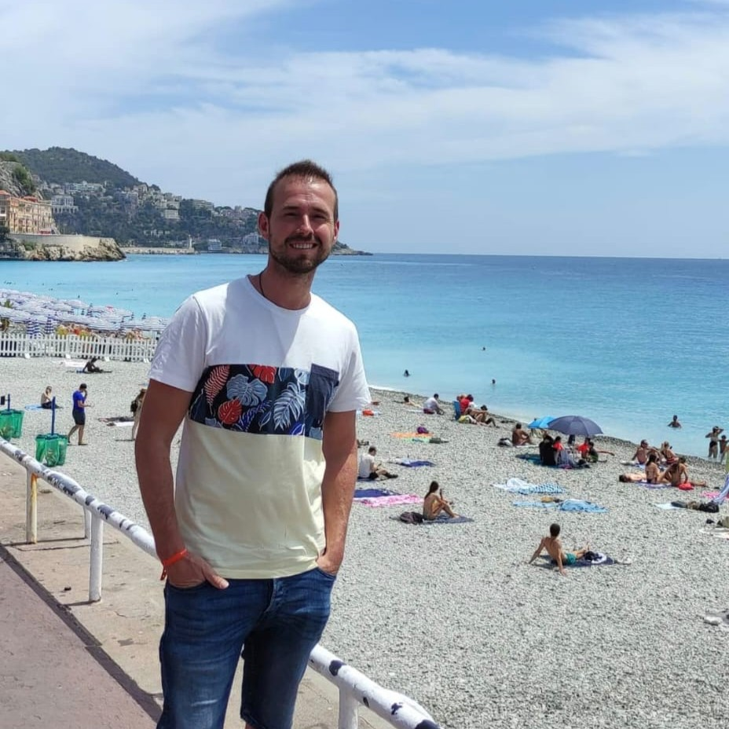
La Promenade des Anglais es el símbolo de Niza: un paseo marítimo de unos 7 km que recorre toda la Bahía de los Ángeles. Sus famosas sillas azules mirando al mar son el lugar perfecto para descansar y ver el atardecer.
Por el camino verás el lujoso Hotel Negresco y las playas de cantos rodados, con el agua más azul que puedas imaginar. Es ideal para recorrerlo andando, en bici o en patines.
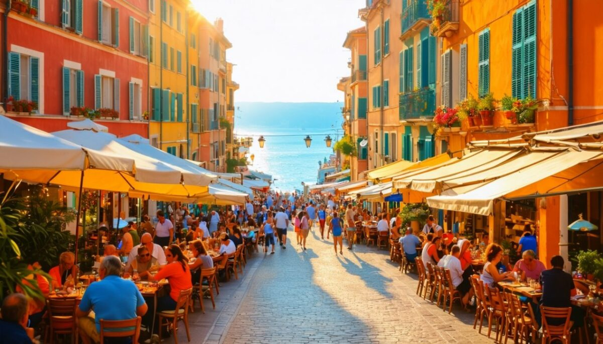
El casco antiguo de Niza es un laberinto de callejuelas con fachadas de colores ocre y amarillo, iglesias barrocas, tiendas de jabones y puestos de socca. Su calle más famosa es el Cours Saleya, donde cada mañana se monta el mercado de flores, frutas y verduras.
Muy cerca está la Place Masséna, la plaza principal de la ciudad, con su suelo ajedrezado y sus edificios rojos, y el Paseo del Paillon, un gran parque urbano con fuentes.
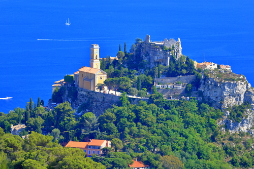
Èze es un pueblo medieval colgado en lo alto de un peñasco a más de 400 metros sobre el mar. Sus calles de piedra, sin coches, están llenas de galerías de arte, pequeñas tiendas y rincones con flores. Es uno de los pueblos más bonitos de toda la Costa Azul.
En lo más alto, sobre las ruinas del antiguo castillo, está el Jardín Exótico, con cactus y plantas suculentas y unas vistas increíbles del Mediterráneo. En el pueblo también puedes visitar gratis las fábricas de perfume Fragonard y Galimard.
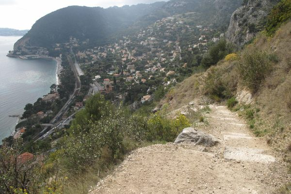
El Chemin de Nietzsche es un camino de montaña que une el pueblo de Èze con Èze-sur-Mer, junto al mar. Lleva el nombre del filósofo Friedrich Nietzsche, que lo recorría a menudo y que, según se cuenta, ideó aquí parte de "Así habló Zaratustra".
El sendero baja entre pinos y olivos con vistas al mar durante todo el recorrido. Al llegar abajo puedes darte un baño y volver a Niza o seguir hacia Mónaco en tren desde la estación de Èze-sur-Mer.
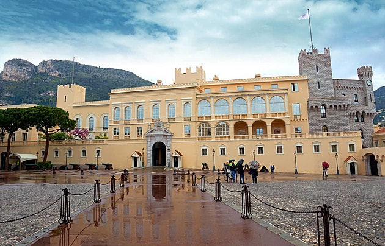
La Roca (Le Rocher) es el casco antiguo de Mónaco, situado sobre un promontorio rocoso que se adentra en el mar. Allí se encuentra el Palacio del Príncipe, residencia de la familia Grimaldi desde el siglo XIII. Cada día a las 11:55 se celebra el cambio de guardia frente al palacio.
A pocos pasos está la Catedral de Mónaco, donde están enterrados la princesa Grace Kelly y el príncipe Rainiero III. Las callejuelas de la Roca y los jardines de Saint-Martin tienen vistas espectaculares al puerto de Fontvieille y al de Montecarlo.
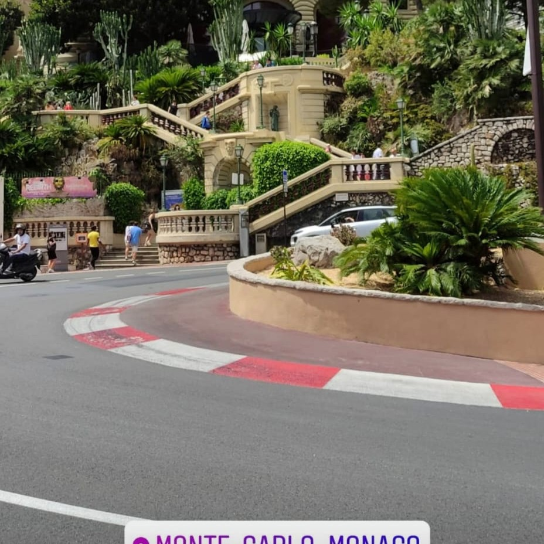
El Casino de Montecarlo, inaugurado en 1863, es el edificio más famoso de Mónaco. Su fachada Belle Époque, sus jardines y los coches deportivos aparcados en la puerta lo convierten en una de las imágenes más icónicas de la Riviera.
Por la noche, la plaza del Casino se ilumina y es el mejor momento para verla. Muy cerca puedes recorrer parte del circuito urbano de Fórmula 1, como la famosa curva de la horquilla del Fairmont o el túnel.
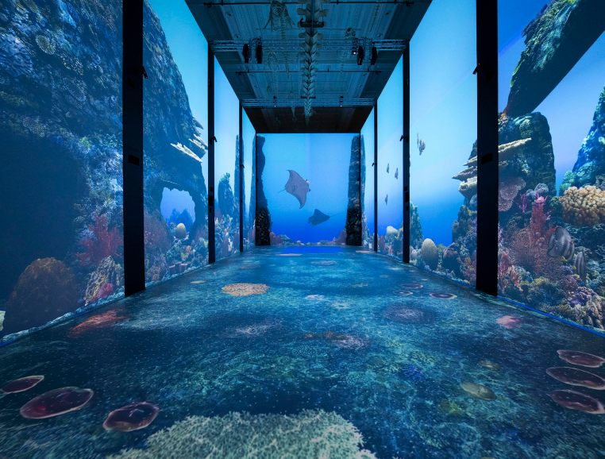
El Museo Oceanográfico está construido sobre un acantilado a 85 metros sobre el mar. Fue fundado por el príncipe Alberto I y durante años lo dirigió el famoso explorador Jacques Cousteau.
Tiene un gran acuario con tiburones, tortugas y peces tropicales, colecciones científicas y una terraza en la azotea con vistas impresionantes de la costa de Mónaco e Italia.
La Costa Azul se disfruta mejor sin prisas. Lo ideal es dedicar al menos 7 días: 1 día a Nimes, 1 a Saint-Tropez, 1 a Cannes, 2 a Niza, y 1 día combinando Èze y Mónaco.
Èze y Mónaco se pueden ver juntos en un mismo día desde Niza: sube por la mañana a Èze-village en autobús, baja por el Sendero de Nietzsche hasta Èze-sur-Mer y coge el tren hasta Mónaco para pasar la tarde y ver el Casino iluminado.
Si vas a Nimes, no te pierdas el Pont du Gard, a unos 25 km: es un acueducto romano de casi 50 metros de altura y Patrimonio de la Humanidad.